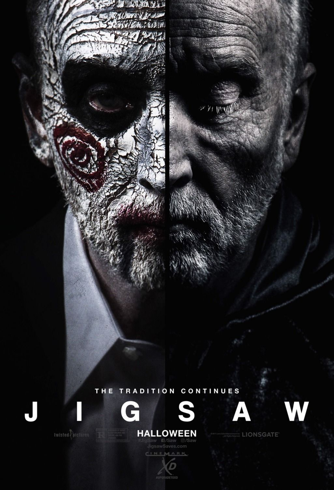

JIGSAW
After a series of murders bearing all the markings of the Jigsaw killer, law enforcement officials find themselves chasing the ghost of a man who has been dead for over a decade, and they become embroiled in a new game that's only just begun. Is John Kramer back from the dead to remind the world to be grateful for the gift of life? Or is this a trap set by a killer with designs of his own?
However, in the sequels the new “jigsaw” did kill people. They did not want victims to survive or learn a lesson, they wanted them to suffer. The reason the new jigsaw killed his victims was for revenge.
On cinema at 19:30 TO 20:30